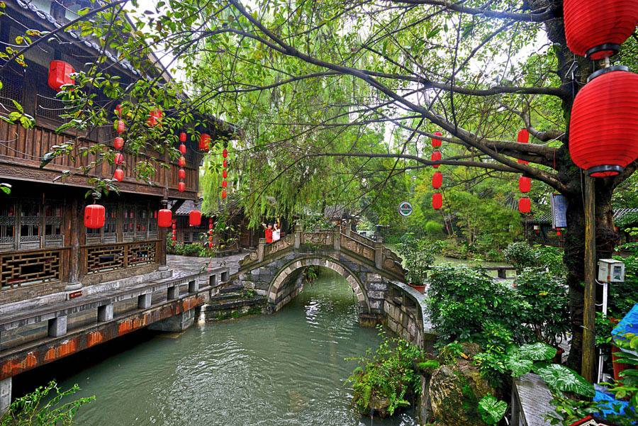

锦里特色
锦里由成都武侯祠博物馆恢复修建，作为武侯祠（三国历史遗迹区、锦里民俗区、西区）的一部分，街道全长550米。现为成都市著名步行商业街，为清末民初建筑风格的仿古建筑，以三国文化和四川传统民俗文化为主要内容。古街布局严谨有序，酒吧娱乐区、四川餐饮名小吃区、府第客栈区、特色旅游工艺品展销区错落有致。锦里于2004年10月正式对外开放，其延伸段锦里二期（水岸锦里）于2009年1月开始迎客，成都文化名片之一的锦里古街完成升级，锦里依托武侯祠，“拜武侯 泡锦里”已成为成都旅游最具号召力的响亮口号之一。2005年锦里被评选为“全国十大城市商业步行街”之一，与北京王府井、武汉江汉路、重庆解放碑、天津和平路等老牌知名街市齐名，号称“西蜀第一街”，被誉为“成都版清明上河图”。2006年，锦里又被国家文化部授予“国家文化产业示范基地”。
